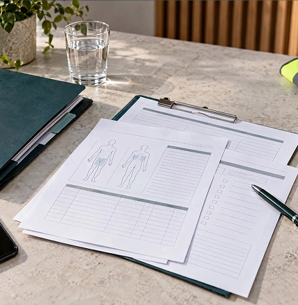
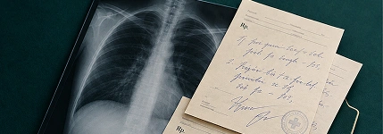

Важен не только сам диагноз. Битуах Леуми оценивает обстоятельства происшествия и его связь с работой.
Травма на работе в Израиле
Получили травму во время работы? Поможем разобраться, как зафиксировать происшествие, оформить обращение в Битуах Леуми и защитить ваши права на последующих этапах.
На русском языке · Работаем с пострадавшими по всему Израилю
Травма произошла недавно
Разберём, какие действия и документы нужны сейчас.
Работодатель не помогает
Проверим, как действовать, если возникают сложности с оформлением.
Битуах Леуми уже отказал
Изучим решение и возможные дальнейшие действия.
После травмы остались ограничения
Разберём следующий этап и вопрос установления трудовой инвалидности.
Самое важное — сразу
Получили травму на работе? Вот что важно сделать
Первые действия после травмы могут иметь значение для последующего признания случая производственным. Не откладывайте медицинское обращение и сохраните документы, связанные с происшествием.
Шаг
Обратитесь за медицинской помощью
Расскажите врачу не только о травме, но и о том, при каких обстоятельствах она произошла — во время работы.
Шаг
Сообщите работодателю
Для наёмного работника работодатель оформляет направление на медицинское обслуживание по форме BL/250. Для самостоятельно занятого используется BL/283.
Шаг
Сохраните документы
Медицинские заключения, справки, данные свидетелей, фотографии места происшествия и переписку, относящуюся к случившемуся.
Шаг
Не подписывайте документы, содержание которых вам непонятно
Сначала выясните, какие юридические последствия они могут иметь.
Уже прошло несколько дней или недель?
Это не означает автоматически, что обращаться поздно.
Это не означает автоматически, что обращаться поздно.
Получить первичную
оценку ситуации
Право на компенсацию
Что считается травмой на работе в Израиле
Производственная травма — תאונת עבודה — в базовом случае связана с несчастным случаем, произошедшим во время и вследствие работы.
Израильское законодательство и правила Битуах Леуми предусматривают также ряд дополнительных ситуаций, которые при определённых условиях могут быть признаны связанными с работой.
Например:
Падение на рабочем месте;
Порез, ожог или перелом;
Травма при работе с инструментом или оборудованием;
Травма при выполнении рабочего задания вне обычного рабочего места;
Повреждение при поднятии или перемещении груза;
Происшествие во время деятельности, непосредственно связанной с работой.

Проверить, относится ли мой случай
к производственной травме
Направления
Не каждая травма, связанная с работой, рассматривается одинаково
ДТП или другое происшествие по дороге
Отдельно оцениваются обстоятельства маршрута и связь поездки с работой.

Заболевание развилось вследствие работы
Это другой юридический сценарий.
заболевание в Израиле
Компесация
Какие права могут возникнуть после производственной травмы
Дмей пгия
до 91 дня выплат
до 91 дня выплат
Выплата за период нетрудоспособности при соблюдении установленных условий.
Медицинское лечение
Медицинское обслуживание в рамках правил Битуах Леуми.
Если остались ограничения
Отдельная процедура установления степени трудовой инвалидности.
Право на выплаты и их размер зависят от обстоятельств дела и решений Битуах Леуми.
Подробнее о выплатах и документах
Сложные случаи
В каких ситуациях помощь адвоката особенно важна
В сложных ситуациях юридическая помощь помогает разобраться в своих правах, правильно подготовить документы и выстроить дальнейшие действия для обращения в Битуах Леуми.
Обсудить ситуацию
с адвокатским офисом:
Работодатель оспаривает обстоятельства травмы
Если версия работодателя отличается от вашей, важно правильно зафиксировать факты и документы.
Вам не дают или не подписывают документы
Отказ работодателя подписать заявление сам по себе не означает, что возможность обратиться в Битуах Леуми исчезает. Битуах Леуми прямо предусматривает процедуру для ситуации, когда работодатель не желает подписывать заявление.
Битуах Леуми не признаёт происшествие производственным
Необходимо изучить основания решения и материалы, которые были представлены.
После травмы остались ограничения
Нужно оценить дальнейшую процедуру установления трудовой инвалидности и подготовку медицинских материалов.
Обстоятельства происшествия неоднозначны
Например, травма произошла не непосредственно за рабочим столом или станком, а во время выполнения поручения, поездки или другой связанной с работой деятельности.
Вы плохо говорите или читаете на иврите
В медицинских документах и заявлениях важны формулировки. Клиенту необходимо понимать, что именно подаётся от его имени.
Порядок
Что мы делаем по делам о травмах на работе
Первое сообщение не обязывает начинать сопровождение. Сначала мы разбираемся в ситуации — и только потом предлагаем конкретные шаги.
Разбираем обстоятельства происшествия
Где, когда и при каких обстоятельствах произошла травма, что зафиксировано работодателем и врачами.
Проверяем документы
Медицинские заключения, документы работодателя, материалы Битуах Леуми и другие подтверждения.
Определяем юридический маршрут
Что необходимо сделать сейчас, какие процедуры уже начаты и какие этапы могут потребоваться дальше.
Сопровождаем взаимодействие с Битуах Леуми
Помогаем подготовить дело и документы на соответствующих этапах процедуры.
Готовим к медицинской комиссии
Если дело переходит к установлению трудовой инвалидности, важно, чтобы комиссия получила релевантную медицинскую информацию о последствиях именно этой травмы.
Разбираем отказ или спорную ситуацию
Изучаем принятое решение и оцениваем юридически доступные дальнейшие действия.
Что мы делаем
Как проходит работа с нами
Шаг
Вы рассказываете, что произошло
Когда была травма, где она произошла, обращались ли вы к врачу, работодателю и Битуах Леуми.
Шаг
Проверяем ситуацию и документы
Определяем, какой этап уже пройден и каких материалов не хватает.
Шаг
Формируем порядок действий
Объясняем, что необходимо сделать сейчас и какие этапы могут последовать дальше.
Шаг
Сопровождаем переговоры или суд
Если страховая предлагает явно недостаточную сумму — ведём переговоры или готовим позицию для суда. Объясняем реалистичные варианты до начала работы.
Шаг
Если последствия сохраняются — оцениваем следующий этап
В том числе вопрос обращения по поводу трудовой инвалидности и медицинской комиссии.
Работодатель не хочет оформлять травму?
Это одна из ситуаций, из-за которой пострадавшие откладывают обращение. Но позиция работодателя не является единственным фактором, определяющим ваши права.
Битуах Леуми указывает, что если работодатель не согласен с признанием происшествия рабочей травмой, он может изложить свои возражения в соответствующей части заявления. Сам пострадавший при этом должен указать сведения о своём обращении к работодателю.
Более того, если между человеком и работодателем действительно существовали трудовые отношения, неуплата работодателем страховых взносов сама по себе не лишает работника соответствующих прав по страхованию производственных травм.
Напишите нам, после первичного разбора станет понятно, какой порядок действий необходим.
Для иностранцев
Я не гражданин Израиля.
Могу ли я обратиться после травмы на работе?
Могу ли я обратиться после травмы на работе?
Битуах Леуми относит к застрахованным по производственным травмам наёмных работников, в том числе тех, кто не является резидентом Израиля. Для иностранных работников также предусмотрена процедура обращения после рабочей травмы.
Если у вас есть вопросы из-за статуса, формы трудоустройства или действий работодателя, ситуацию лучше рассматривать индивидуально.
Ошибки
Какие ошибки могут
осложнить дело
осложнить дело
Откладывать обращение к врачу
Чем позднее появляется документальный след происшествия, тем больше вопросов может возникнуть относительно обстоятельств травмы.
Рассказывать врачу только о симптомах
Важно, чтобы медицинские документы отражали не только повреждение, но и обстоятельства, при которых оно было получено.
Терять документы и переписку
Медицинские заключения, документы работодателя и переписку лучше хранить с самого начала.
Считать отказ работодателя окончательным
Процедура не сводится исключительно к согласию работодателя.
Затягивать подачу заявления
Битуах Леуми указывает, что заявление на injury allowance необходимо подать в течение 12 месяцев с даты травмы, а поздняя подача может повредить праву на получение выплаты. Сам институт рекомендует обращаться как можно раньше.
Почему мы
Юридическое сопровождение
на русском языке
на русском языке
Понятно объясняем процесс
Вы понимаете, что происходит сейчас и что должно произойти дальше.
Работаем с документами на иврите
Коммуникация с клиентом — на русском, работа в израильской системе — на иврите.
Не обещаем результат до изучения дела
Сначала документы и обстоятельства — потом юридическая оценка.
Команда остаётся на связи по ходу процесса
Сообщаем об изменениях по делу, объясняем следующие шаги и заранее запрашиваем нужные документы. Общаемся на русском.
Частые вопросы
Частые вопросы о травмах
на работе в Израиле
на работе в Израиле
Можно ли оформить СТУПРО без официального брака?
Да. Ступенчатая процедура МВД распространяется как на официально зарегистрированных супругов, так и на пары, состоящие в гражданском браке (ידועים בציבור). Важно документально подтвердить реальность отношений и совместного проживания. Конкретный маршрут зависит от вашей ситуации — уточните при первом обращении.
ДНК-тест — это тест на «еврейство»?
Нет, это принципиально разные вещи. ДНК-тест в иммиграционном контексте используется исключительно для подтверждения биологического родства — например, отцовства или связи с гражданином Израиля. Он не доказывает принадлежность к еврейскому народу и не является основанием для репатриации сам по себе. Кроме того, для МВД нужен юридически оформленный тест — обычный медицинский анализ не подойдёт.
Сколько стоит работа с вашим офисом?
Стоимость зависит от вида и сложности дела. После первичного разбора ситуации мы объясняем условия сопровождения, что именно входит в работу офиса и какие этапы предстоят. Напишите нам — расскажем подробнее применительно к вашему случаю.
Вы работаете только в одном городе?
Нет. Мы работаем с клиентами по всему Израилю. Консультации проводим онлайн или в офисе. В отдельных случаях возможен выезд к клиенту — формат согласуется индивидуально при первом обращении.
Как быстро вы отвечаете на сообщения?
Стараемся ответить в день обращения. У каждого клиента есть общий WhatsApp-чат с командой офиса — это значит, что ваш вопрос не зависит от того, занят ли один конкретный сотрудник. В праздничные дни время ответа может увеличиться — мы предупреждаем об этом заранее.
Как убедиться, что ваш офис реальный?
Адвокат Михаэль Коберг зарегистрирован в Коллегии адвокатов Израиля. Вы можете проверить его лицензию в официальном реестре — ссылка на профиль есть на странице команды. У нас официальный сайт, реальный офис и возможность очной встречи до принятия какого-либо решения.
Также по теме
Подробнее о выплатах,
комиссиях и других случаях
комиссиях и других случаях
Травма по дороге на работу
Когда авария, падение или другое происшествие случилось по пути на работу или домой.
Подробнее
Битуах Леуми после травмы на работе
Дмей пгия, документы, обращение и дальнейшие этапы.
Подробнее
Профессиональное заболевание
Когда вред здоровью возник постепенно вследствие условий работы.
Подробнее
Медицинская комиссия Битуах Леуми
Как устанавливается степень трудовой инвалидности после травмы.
Подробнее
Получили травму на работе и не знаете, что делать дальше?
Опишите, когда и при каких обстоятельствах произошла травма, обращались ли вы к врачу и какие документы уже получили. Мы разберём ситуацию и объясним возможный следующий шаг.

Адвокатский офис Михаэля Коберга ·
Сопровождение на русском языке
Сопровождение на русском языке
Возможность признания травмы производственной и получения выплат зависит от обстоятельств конкретного дела и решений компетентных органов.